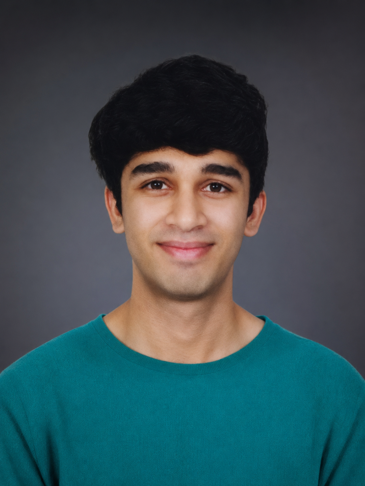

Technology × Finance × Analytics × Research.
I’m Tanmay Gupta, a B.Tech Computer Science Engineering student at LJ University, Ahmedabad. I enjoy understanding financial performance, working with datasets, building dashboards and translating quantitative information into clear insights.

A practical mix of business and technical thinking.
Financial Analysis
Financial statements, profitability, cash flow, valuation and company-level performance analysis.
Analytics & Visualization
Exploratory analysis, data preparation, dashboards and visual communication of quantitative findings.
Research Thinking
Structured questions, quantitative methods, statistical reasoning and clear evidence-based conclusions.
B.Tech in Computer Science Engineering
LJ University · Ahmedabad, Gujarat, India
2024–2028 expected
Research & Analytical Opportunities
Building a research-ready portfolio around finance, analytics, business research and quantitative methods.
Tools I use across projects.
See the work behind the profile.
Explore the financial analysis and fraud detection projects.